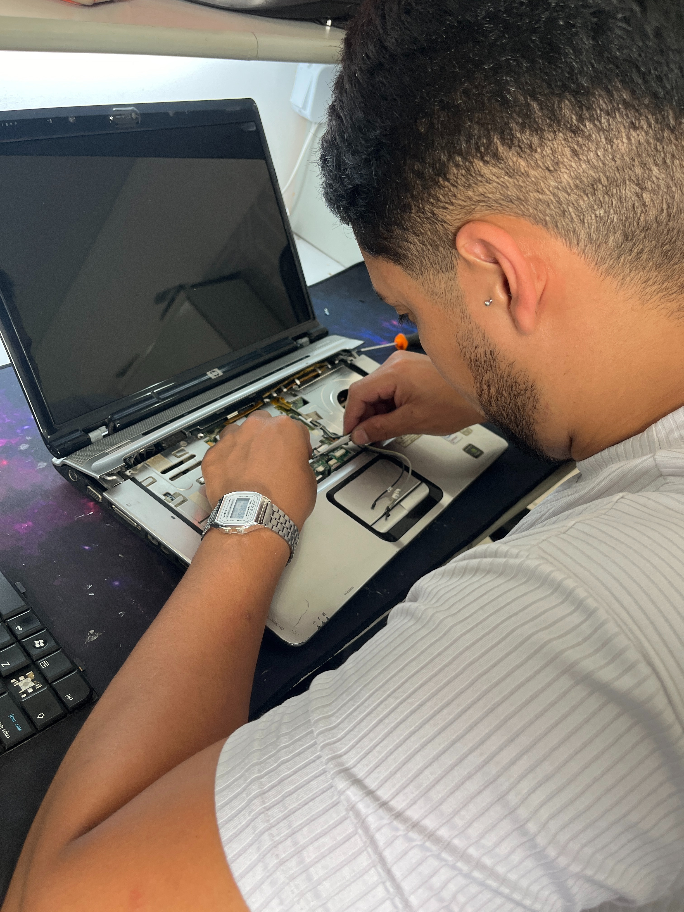
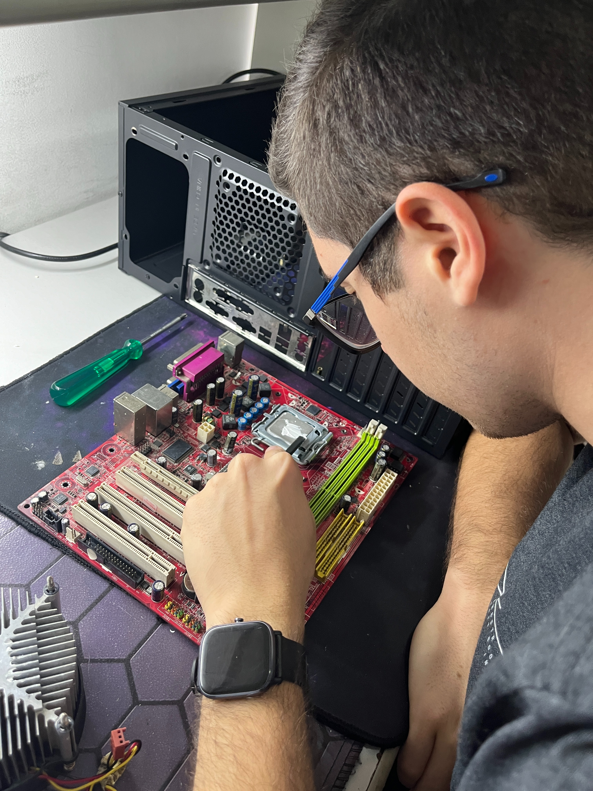
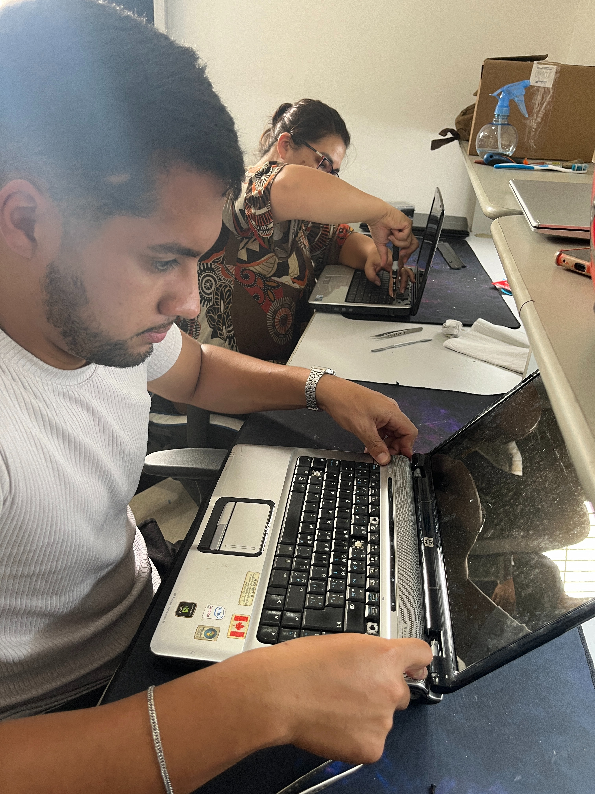
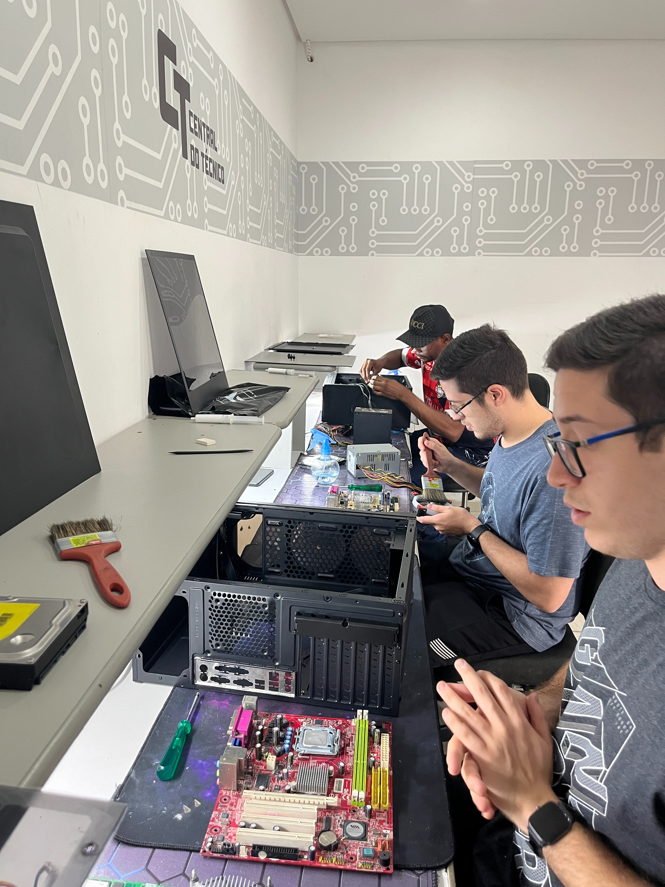
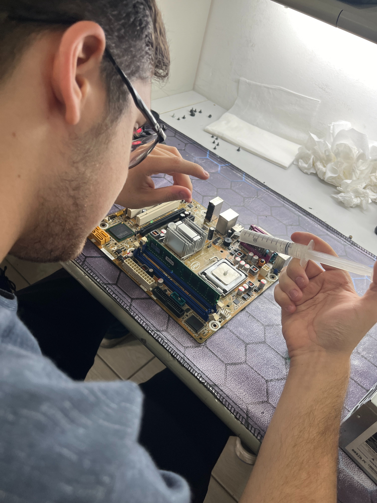

EXPLORE NOSSOS CURSOS E COMECE SUA CARREIRA DE SUCESSO!
Aqui, a prática é 100%
A escola mais bem avaliada no Google na área de manutenção de dispositivos eletrônicos.
Aqui, a prática é 100%

Traga aparelhos de clientes e realize os consertos durante o curso, ganhando experiência e dinheiro ao mesmo tempo.





"Fiz um curso técnico de reparo de celulares que foi uma experiência muito enriquecedora. Os instrutores eram altamente qualificados, tornando o aprendizado acessível e prático. Aprendi a lidar com uma variedade de problemas, desde simples trocas de tela até reparos em placas. O curso oferecia um ambiente acolhedor e colaborativo, onde os colegas compartilhavam dicas e experiências, o que tornou o aprendizado ainda mais eficaz. Ao concluir, me senti confiante nas minhas habilidades e pronto para iniciar uma carreira na área."
"Ótima experiência, professor atencioso e prestativo com todos os alunos, abstraí 100 por cento de todas as aulas."
"Curso muito prático, deu para entender tudo e o suporte que oferece esclarece qualquer dúvida."
"O curso é muito bom, muito didático, bem elaborado e prático. Não tenho do que reclamar, só agradecer."
"Curso incrível!! Equipe nota mil. Professor sensacional. Só a agradecer ao Central do Técnico."
"Muito satisfeito com o atendimento e o conteúdo do curso, professor muito experiente e bem atencioso, recomendo a todos."
Suporte: (11) 92092-4554
E-mail: mktcentraldotec@gmail.com
Endereço: Rua Tuiuti, 2358 Sala 2 Tatuapé | SP CEP 03307-005